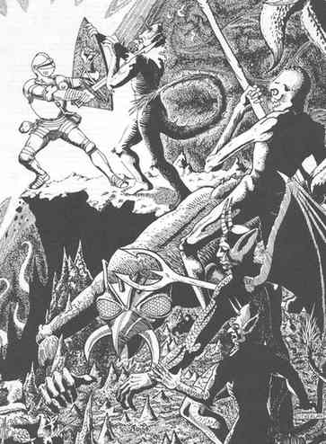

圣武士 · The Paladin
圣武士是战士的子职业。与普通战士不同，圣武士起始阵营必须是守序善良（见相关条目），而且必须始终保持守序善良，否则会彻底失去获赐的一切特殊能力。圣武士既有战斗能力，高等级时也能施展少量法术。角色必须是人类，力量至少 12、智力至少 9、感知至少 13、体质至少 9、魅力至少 17，才能成为圣武士。若力量和感知都高于 15，圣武士可将地下城主授予的经验值增加 10%。
守法与行善是圣武士赖以为生的根本。若明知某种行为本质上属于混乱却仍付诸实施，他们必须找到一位第 7 级或更高、守序善良阵营的牧师，向其忏悔，并依牧师的要求赎罪。圣武士若明知故犯、自愿作恶，便会立即且永久地失去圣武士身份。所有特权随之消失，任何行为或魔法都无法恢复这一身份；此后角色永远只是一名战士。
圣武士拥有以下特权：
- 只要愿意，圣武士便可探测最远 60 英尺内的邪恶；但使用时必须集中精神判断邪恶是否存在，并朝大致正确的方向探测。
- 所有豁免检定（见相关条目）的掷骰均获得 +2 加值。
- 免疫一切疾病。
- 能够为他人或自己“圣疗”以治愈伤口。每个经验等级可治疗 2 点伤害，但每日只能圣疗一次。
- 能够治愈任何疾病；每获得五个经验等级，每周可使用一次。换言之，第 1 至 5 级每周治愈一种疾病，第 6 至 10 级为两种，第 11 至 15 级为三种，依此类推。
- 圣武士周围半径 1 英寸内持续散发防护邪恶的力量（见“角色法术”）。
- 第 3 级时，圣武士能像第 1 级牧师一样影响不死生物、魔鬼和恶魔。此能力随圣武士每升一级而提高：第 4 级相当于第 2 级牧师，第 5 级相当于第 3 级牧师，依此类推（见上文“牧师”）。
- 第 4 级起，圣武士可随时召来自己的战马。它是一匹有智慧的重型战马，生命骰为 5+5（5d8 再加 5 点生命值），AC 5，速度与中型战马相同（18 英寸）。战马以魔法方式出现，但每十年只能获得一匹；若第一匹战马失去，圣武士必须等到十年期满才能再得一匹。
- 圣武士若拥有“圣剑”（一种特殊魔法剑；裁判知晓其详情，并会在必要时向你说明），拔剑持用时会投射出直径 1 英寸的力量之环。此力量会施展解除魔法（见“角色法术”中的解除魔法），施法等级等于圣武士的经验等级。
- 从第 9 级到第 20 级，圣武士逐渐获得使用牧师法术（见相关条目）的能力。但他们绝不能使用法术卷轴，通常可供战士使用的卷轴除外。
圣武士还须遵守以下戒律：1. 身边保留的魔法物品绝不得超过十件，其中各类上限如下：护甲 1 套；盾牌 1 面；武器 4 件；其他魔法物品 4 件。武器包括匕首、剑等；魔法弓与魔法箭之类的组合合计只算 1 件武器。

- 圣武士绝不积蓄财富，只保留足以维持俭朴生活、支付亲信、披甲武士与仆从薪酬，以及建造或维护一座小型城堡的财物。（必要时，DM 会说明具体限度。）多余财物必须送出；下述什一奉献亦然。
- 一切收入——无论是宝藏、薪资还是其他所得——都必须立即取十分之一，捐给圣武士自行选择的守序善良慈善宗教机构；受赠者不得是牧师玩家角色。
- 圣武士的亲信只能是守序善良阵营。他们只与善良阵营的角色或生物交往。若冒险队中有非邪恶的中立角色，圣武士只能为完成一次远征而暂时加入，而且该远征的目的必须能推进守序善良的事业。
- 条件允许时，圣武士会投效守序善良的牧师或具有贵族身份的战士，或与之结盟；这些角色可以是玩家角色，也可以不是。
圣武士不会像普通战士那样吸引一队披甲武士前来效力。
圣武士（战士）表 I Paladins (Fighters) Table I
圣武士（战士）表 I Paladins (Fighters) Table I
| 经验值 | 经验等级 | 累计生命值所用十面骰 | 等级称号 |
|---|---|---|---|
| 0–2,750 | 1 | 1 | Gallant／勇士 |
| 2,751–5,500 | 2 | 2 | Keeper／守护者 |
| 5,501–12,000 | 3 | 3 | Protector／保护者 |
| 12,001–24,000 | 4 | 4 | Defender／防卫者 |
| 24,001–45,000 | 5 | 5 | Warder／卫士 |
| 45,001–95,000 | 6 | 6 | Guardian／卫护者 |
| 95,001–175,000 | 7 | 7 | Chevalier／骑士 |
| 175,001–350,000 | 8 | 8 | Justiciar／执法官 |
| 350,001–700,000 | 9 | 9 | Paladin／圣武士 |
| 700,001–1,050,000 | 10 | 9+3 | Paladin (10th level)／圣武士（第10级） |
| 1,050,001–1,400,000 | 11 | 9+6 | Paladin (11th level, etc.)／圣武士（第11级，依此类推） |
第 11 级以后，每升一级另需 350,000 点经验值。
第 9 级以后，圣武士每级增加 3 点生命值。
各等级圣武士（战士）可用法术 Spells Usable By Class And Level—Paladins (Fighters)
各等级圣武士（战士）可用法术 Spells Usable By Class And Level—Paladins (Fighters)
| 圣武士等级 | 牧师法术环级 1 | 2 | 3 | 4 |
|---|---|---|---|---|
| 9 | 1 | — | — | — |
| 10 | 2 | — | — | — |
| 11 | 2 | 1 | — | — |
| 12 | 2 | 2 | — | — |
| 13 | 2 | 2 | 1 | — |
| 14 | 3 | 2 | 1 | — |
| 15 | 3 | 2 | 1 | — |
| 16 | 3 | 3 | 2 | — |
| 17 | 3 | 3 | 2 | — |
| 18 | 3 | 3 | 3 | 1 |
| 19 | 3 | 3 | 3 | 2 |
| 20* | 3 | 3 | 3 | 3 |
*法术能力上限。
战士、圣武士与游侠每轮近战攻击次数表 Fighters', Paladins', & Rangers' Attacks Per Melee Round Table
战士、圣武士与游侠每轮近战攻击次数表 Fighters', Paladins', & Rangers' Attacks Per Melee Round Table
| 等级 | 每轮近战攻击次数* |
|---|---|
| Fighter 1–6／战士1–6 | 1/1 round |
| Paladin 1–6／圣武士1–6 | 1/1 round |
| Ranger 1–7／游侠1–7 | 1/1 round |
| Fighter 7–12／战士7–12 | 3/2 rounds |
| Paladin 7–12／圣武士7–12 | 3/2 rounds |
| Ranger 8–14／游侠8–14 | 3/2 rounds |
| Fighter 13 & up／战士13级以上 | 2/1 round |
| Paladin 13 & up／圣武士13级以上 | 2/1 round |
| Ranger 15 & up／游侠15级以上 | 2/1 round |
*使用任何刺击或打击武器时。
注意：此表不适用于与生命骰不足 1 枚（d8）的怪物（见相关条目），以及 0 级、并非出类拔萃的人类或半人类近战；也就是一切生命骰不足一枚八面骰的生物。面对这类生物时，战士每有一个经验等级即可攻击一次（见“战斗”）。